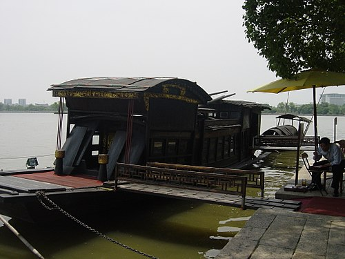

从1921年7月中国共产党建立至1949年10月中华人民共和国成立
2021年02月03日 11:47:11 来源：光明日报 作者： 曲青山 
开天辟地：中国共产党在新民主主义革命时期完成救国大业
中国的近代史是从1840年鸦片战争开始的。从那时起，中国逐渐成为半殖民地半封建社会。为了改变中华民族悲惨屈辱的命运，中国人民和无数仁人志士进行了千辛万苦的探索和不屈不挠的斗争。封建统治阶级发起洋务运动，农民阶级发动太平天国起义和义和团运动，资产阶级改良派、革命派先后发动戊戌变法、辛亥革命，但都最终归于失败。中国共产党就是在这样的历史背景下登上中国政治舞台的。中国共产党是在近代中国社会矛盾的剧烈冲突中、在中国人民反抗封建统治和外来侵略的激烈斗争中、在马克思列宁主义同中国工人运动的结合过程中应运而生的。
1921年7月23日，党的一大在上海召开，几天后在浙江嘉兴南湖的红船上结束。一大的召开标志着中国共产党的正式建立。在这之前各地建立的党组织，都是党的早期组织。关于一大的召开，党史大家胡乔木同志曾写过这样一段话：一大开过了，似乎什么也没有发生，连报纸上也没有一点报道。但是，中国的伟大事变在实质上却开始了。毛泽东同志在总结党的创建的历史时说：“中国产生了共产党，这是开天辟地的大事变。”“从此以后，中国改换了方向。”与以往中国其他政党和政治组织不同的是，中国共产党一经成立就把实现共产主义作为最高理想和最终目标，确立起为中国人民谋幸福、为中华民族谋复兴的初心和使命。
中国共产党对中国革命道路的探索经历了艰难的历程。在艰辛的探索实践中，中国共产党坚持把马克思主义基本原理同中国革命具体实际相结合，团结带领中国人民找到了一条农村包围城市、武装夺取政权的正确革命道路，进行了28年浴血奋战，打败日本帝国主义，推翻了国民党反动统治，完成了新民主主义革命，建立了中华人民共和国。在这个过程中，党带领人民流血牺牲，历经千难万险。可以说，红色政权来之不易，新中国来之不易。它是红色的，是由无数革命先烈用生命和鲜血换来的。毛泽东同志在党的七大上曾指出：“我们党尝尽了艰难困苦，轰轰烈烈，英勇奋斗。从古以来，中国没有一个集团，像共产党一样，不惜牺牲一切，牺牲多少人，干这样的大事。”东北抗日联军领导人杨靖宇同志在同日寇作战最后弹尽粮绝剩下一人时，面对他人的劝降，掷地有声地说：“老乡，我们中国人都投降了，还有中国吗？”据不完全统计，从1921年至1949年，牺牲的全国有名可查的革命烈士达370多万人，平均每天牺牲370多人。他们真正用行动诠释了“为有牺牲多壮志，敢教日月换新天”的豪情与壮志。
新中国的成立，标志着中国共产党领导的人民大众的反帝反封建的新民主主义革命的胜利，宣告中国人民从此站立起来了！它彻底结束了旧中国半殖民地半封建社会的历史，彻底结束了旧中国一盘散沙的局面，彻底废除了列强强加给中国的不平等条约和帝国主义在中国的一切特权，中国人民真正成为国家和社会的主人，实现了中国从几千年封建专制政治向人民民主的伟大飞跃。中华民族走上了实现伟大复兴的壮阔道路，“以勇敢而勤劳的姿态工作着，创造自己的文明和幸福，同时也促进世界的和平和自由”。